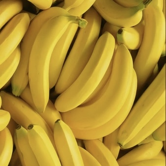
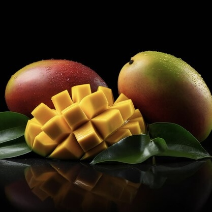
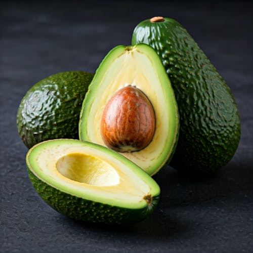
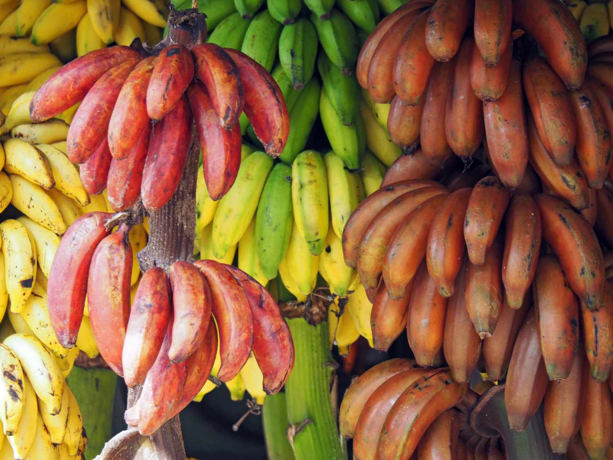
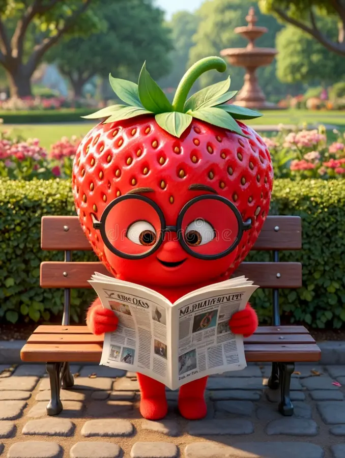

PULP PRO
⬆ New Update Available — Tap to Refresh
PULP PRO
🏠 Home
📰 News
App Settings
🌓
Dark Mode
🌐
🇳🇱 Nederlands
⚠️ Clear Logs
💬 Send Feedback
⭐ Favorites
Select Commodity

Banana

Mango
(SOON)

Avocado
(SOON)
Defect Detector

Colour Scanner

News
Saved Favorites
Banana Menu
Banana Brands
Defects (Soon)
Ripening (Soon)
← Back
Select Brand
← Back
Defect Detector
🍌 Banana
🥭 Mango
🥑 Avocado
← Back
Banana — Select Type
🔍 External Defects
Skin, colour, bruising, cuts, mould
🔬 Internal Defects
Flesh, rot, discolouration, flavour
← Back
Banana — External
Camera not available
Scan
⚠️ Camera detection is colour-based. Accuracy may vary. Always verify results manually.
← Back
Defect Info
← Back to Scan
Defect Report
A
Grade
Fruit
—
Date
—
Defects Found
—
Severity
—
Status
—
Defect Breakdown
Copy Report
← New Scan
Pulp Pro
Banana Colour Scanner
📊 Classic Mode
Single Scan
Multi Scan
Point camera at banana
Scan
Works offline — no internet needed
Get Batch Result →
No photo
Color 1
Full Green
Shelf Life
—
Status
—
📝 Note
📝 Add a note
(optional)
0 / 120
Share Report Card
Copy Text Report
← New Scan
Batch Average
Color 1.5
Boxes Scanned
—
Shelf Life Est.
—
Batch Status
—
📝 Note
📝 Add a note
(optional)
0 / 120
Share Batch Report
Copy Text Report
← New Scan
← Back
📰 Fruit Industry News
All
🍌 Banana
🥭 Mango
🥑 Avocado
← Back
← Back
Summary
Read Full Article
Share Article
Full article content is available on the publisher's website.
Pulp Pro is not affiliated with any news source.
Chiquita
BANANA AGE CHECKER
Single Code
Batch Scan
Get Batch Report →
Calculate
READY
--
-- -- ----
COPY
← Back to Brands